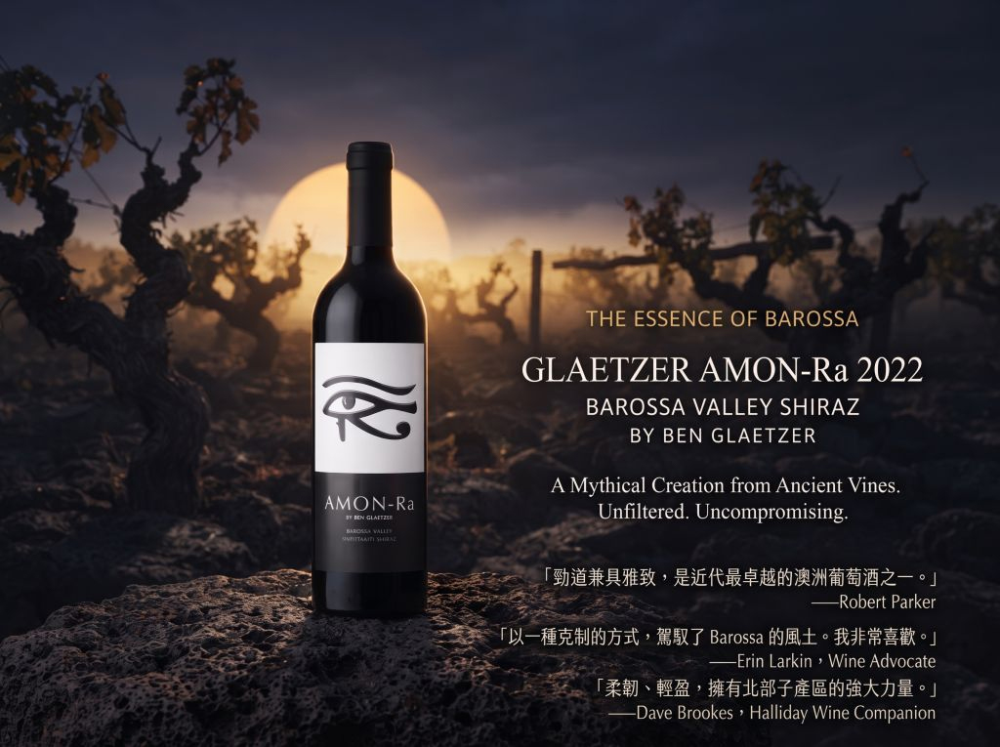

強勁與優雅，並不是兩種選擇。
在 2022 Amon-Ra 裡，
它們被揉成同一種力量。
來自 Barossa Valley Ebenezer 的 Amon-Ra 2022。 以收藏與品飲為目的，提供單瓶與六瓶入的選購方式。

Amon-Ra 是 Glaetzer 酒莊最具代表性的作品之一。 2022 年份來自 Barossa Valley 北部 Ebenezer， 以老藤 Shiraz 所展現的集中度、結構與成熟果實特質， 形成具有辨識度的 Barossa 風格。
2003 年，Ben Glaetzer 推出了第一個 Amon-Ra 年份。這款酒以 Barossa Valley 北部 Ebenezer 地區的老藤 Shiraz 為核心，逐漸建立起屬於自己的 風格辨識度。
Ben Glaetzer 推出第一個 Amon-Ra。 這款酒以 Barossa Valley 北部的老藤 Shiraz 為基礎，逐步建立其代表性風格。
Ebenezer 位於 Barossa Valley 北部， 乾燥的氣候與成熟葡萄條件， 成為 Amon-Ra 風格的重要基礎。
2022 年份延續 Amon-Ra 的風格核心， 以成熟深色果實、結構、香料與橡木交織， 呈現具有深度的 Barossa Shiraz。
在適當保存條件下， 成熟年份所帶來的結構與層次， 也讓 Amon-Ra 具備進一步陳年的條件。
Barossa Valley 北部的 Ebenezer， 是 Amon-Ra 風格的重要來源。 乾燥環境與老藤葡萄樹， 讓葡萄在成熟度與集中度之間形成鮮明特質。
葡萄以人工方式採收， 以保留果實完整度並進行細緻篩選。
使用半噸發酵槽進行開放式發酵， 並進行每日三次人工壓帽。
約 16 個月橡木桶熟成， 讓成熟果實與橡木香氣逐漸融合。
橡木配置約為 95% 法國橡木、 5% 美國橡木，並以未過濾方式裝瓶。
Amon-Ra 2022 的風味結構， 由成熟果實、香料、橡木與土地氣息共同構成。 它不是單一風味，而是一層一層展開。
《神之雫》曾將 Amon-Ra 與 Sine Qua Non
放在同一個天秤上。
而 2022 年的 Amon-Ra，
讓力量與優雅之間的界線，幾乎消失。